Portfolio
La programmation de mon portfolio s'est inspirée d'une version initialement créée sur Wix.
J'ai choisi les couleurs en fonction de celles présentes dans mon logo
pour assurer une cohérence visuelle.
Voici les différentes versions de mon portfolio :
V1 : Conception initiale sur Wix.
V2 : Programmation personnalisée, mise en ligne, et adaptation de la version Wix.
V3 : Ajout de la prise en charge multilingue avec les versions anglaise et japonaise.
V4
Voici les principales modifications apportées dans cette version de mon portfolio en ligne :
Suppression des pages "À Propos" et "Contact" : La page "À Propos" reprenait des informations déjà présentes sur mon CV, ce qui la rendait redondante dans le contexte de ce portfolio. J'ai donc décidé de la supprimer. Pour la page "Contact", qui contenait des liens vers mes réseaux sociaux, je n'ai pas trouvé de disposition satisfaisante. J'ai donc déplacé ces liens dans le footer pour une meilleure intégration.
Suppression de la version japonaise : L'exigence d'une version en japonais provenait d'un cours de programmation durant mon DUT MMI. Cependant, étant donné que je devais recréer chaque page trois fois et que mon niveau de japonais est basique, j'ai choisi de supprimer cette version pour éviter toute confusion quant à mes compétences linguistiques.
Changement de la mise en page : J'ai remplacé les anciennes images de la page d'accueil, qui redirigeaient vers les pages supprimées, par des images menant vers quatre projets distincts dans les catégories programmation, audiovisuel, et jeu vidéo. Pour améliorer la lisibilité, j'ai ajouté de nouvelles couleurs, ainsi qu'une police d'écriture avec des éléments soulignés et en gras pour mettre en valeur les informations importantes.

Ajout de la catégorie "Jeux Vidéo" : Avec l'accumulation de projets dans ce domaine durant ma licence professionnelle, il était nécessaire de créer une nouvelle catégorie pour mieux les organiser.
Fusion des catégories "Design" et "Production Vidéo" en "Audiovisuel" : Pour simplifier la navigation, j'ai fusionné ces deux catégories. La nouvelle catégorie "Audiovisuel" regroupe désormais l'ensemble des projets de design et de production vidéo.
Ajout, suppression et fusion de projets J'ai ajouté plusieurs projets réalisés au cours de ma licence professionnelle, tout en supprimant ceux que je jugeais moins pertinents. Ces derniers ont été intégrés dans des projets plus globaux qui regroupent l'ensemble de mes travaux. De plus, toutes mes créations vidéo sont maintenant organisées en fonction des plateformes sur lesquelles elles ont été partagées.

Déplacement des informations de contact dans le footer : Comme mentionné précédemment, les informations de contact ont été déplacées dans le footer, qui est absent des pages projets pour éviter de surcharger ces dernières.
Projets détaillés :
Les anciens projets présents sur mon portfolio manquaient de détails par rapport aux nouveaux.
J'ai donc ajouté des images et des informations supplémentaires pour les rendre plus complets.
Par exemple, j'ai détaillé la V4 de cette page,
en décrivant point par point les améliorations apportées dans cette version du portfolio.
Langages & logiciels utilisés :
 

 
